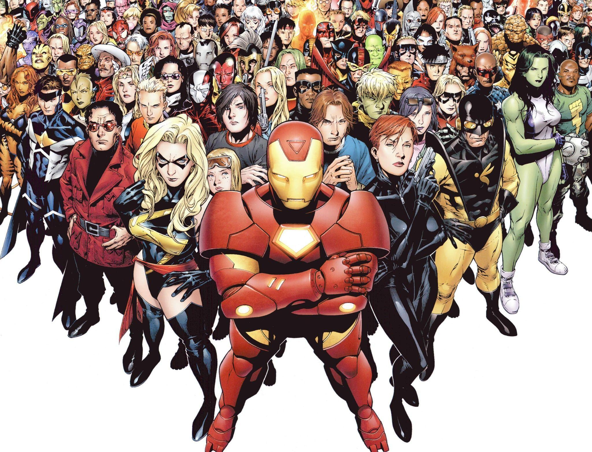
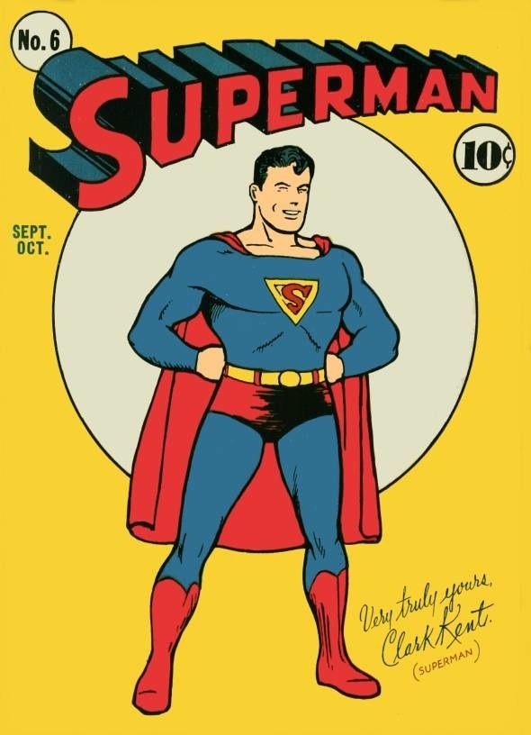

Introduction to superheroes
Superheroes have captivated audiences for generations, representing the ultimate embodiment of courage, justice, and extraordinary abilities. These larger-than-life figures come from various backgrounds, some born with their powers, while others gain them through accidents, scientific experiments, or sheer determination. Whether fighting crime in the streets, defending the planet from cosmic threats, or standing as symbols of hope, superheroes inspire people with their selflessness and heroism. From the superhuman strength of Superman to the technological brilliance of Iron Man, each hero brings something unique to the fight for justice. Their stories, filled with triumphs and struggles, remind us that true heroism is not just about powers but about making the world a better place.
Types of superheroes
Superheroes come in many forms, each with unique abilities, backgrounds, and purposes. One of the most common types is the superhuman or enhanced hero, whose powers go beyond normal human limits. These heroes possess extraordinary strength, speed, endurance, or durability, often gained through genetic mutations, scientific experiments, or supernatural forces. Superman, for example, is an alien whose physiology gives him godlike strength and flight, while Captain America was transformed into a super-soldier through experimental serum. These heroes are often seen as symbols of hope, using their incredible abilities to protect humanity from powerful threats.
The history of superheroes
Superheroes have a long and storied history that dates back to the early 20th century. The first superhero to appear in comic books was Superman, who made his debut in 1938. Superman was created by writer Jerry Siegel and artist Joe Shuster, and he quickly became a cultural icon. Superman was followed by other iconic superheroes, such as Batman, Wonder Woman, Spiderman, Ironman, Captain America, Thor, and Black Panther. These superheroes have become household names, and they have inspired countless comic books, movies, and TV shows. Superheroes have become a global phenomenon, and they continue to captivate audiences of all ages.

Meet the Characters
Get to know the superheroes and their unique abilities.
- Superman: Often called the Man of Steel, is one of the most iconic superheroes of all time. Born on the planet Krypton as Kal-El, he was sent to Earth as a baby and raised by the Kent family in Smallville. Under Earth's yellow sun, he developed extraordinary abilities, including super strength, flight, heat vision, and near-invulnerability. As Superman, he dedicates his life to protecting humanity, upholding truth and justice, and serving as a symbol of hope. Despite his godlike powers, he struggles with balancing his alien heritage and his love for humanity, making him a deeply relatable hero.
- Batman: Also known as the Dark Knight, is a vigilante who relies on his intelligence, combat skills, and advanced technology to fight crime in Gotham City. Unlike many superheroes, Bruce Wayne has no superhuman powers; instead, he has trained his mind and body to peak human perfection. Using his vast fortune, he creates gadgets, vehicles, and suits to take down Gotham’s most dangerous criminals. With a tragic past—witnessing the murder of his parents as a child—Batman is driven by vengeance and a relentless sense of justice. His dark and mysterious persona makes him one of the most complex and intriguing heroes in comic book history.
- Wonder Woman: Is an Amazonian warrior princess, is a symbol of strength, courage, and compassion. Born as Diana of Themyscira, she was gifted with divine powers by the Greek gods, granting her superhuman strength, agility, and immortality. Armed with the Lasso of Truth, indestructible bracelets, and a warrior’s heart, she fights to protect both her homeland and the world of men. As a champion of justice and equality, Wonder Woman represents the perfect blend of power and kindness, making her one of the most inspiring superheroes ever created.
- Spiderman: Is one of the most beloved superheroes of all time, known for his relatable personality and witty humor. Peter Parker, an ordinary teenager from Queens, gained superpowers after being bitten by a radioactive spider. With enhanced strength, agility, and the ability to cling to walls, he became the friendly neighborhood Spider-Man. His web-shooters, which he designed himself, allow him to swing through the city and take down criminals with precision. Despite his powers, Peter struggles with personal challenges, balancing school, relationships, and his responsibility as a hero. His famous motto, "With great power comes great responsibility," defines his commitment to doing what is right.
- Ironman: Also known as Tony Stark, is a billionaire genius who built a high-tech armored suit to escape captivity and later refined it to become a hero. As the leader of Stark Industries, Tony is a brilliant inventor, constantly upgrading his Iron Man suits with new weapons, flight capabilities, and artificial intelligence assistance like J.A.R.V.I.S. Unlike many superheroes, Tony doesn’t have natural superpowers—his intelligence and engineering skills are what make him one of the most powerful heroes. His journey from a self-centered weapons manufacturer to a selfless protector of the world is one of the most compelling character arcs in comic book history.
- Captain America: Also known as Steve Rogers, is the ultimate symbol of heroism and patriotism. A frail young man from Brooklyn, Steve volunteered for an experimental super-soldier serum during World War II, transforming him into the perfect warrior. With enhanced strength, agility, and endurance, he became Captain America, wielding his iconic vibranium shield. As a leader of the Avengers, he embodies integrity, courage, and unwavering dedication to justice. Despite being a man out of time, Steve’s values remain timeless, proving that true heroism comes not from power but from the willingness to stand up for what is right.
- Thor: The Norse God of Thunder, is one of the most powerful heroes in the Marvel Universe. Wielding his enchanted hammer, Mjolnir, Thor can summon lightning, control storms, and fly at incredible speeds. As the prince of Asgard, he is a mighty warrior, often protecting both his home and Earth from cosmic threats. Despite his godly powers, Thor has a deep sense of duty and often struggles with his role as a leader. His heroic journey—from a reckless prince to a wise and humble protector—makes him one of the most dynamic characters in superhero history.
- Black Panther: Also called, T’Challa, is the king of Wakanda, a technologically advanced nation hidden in Africa. As the Black Panther, he possesses enhanced strength, speed, and reflexes granted by the heart-shaped herb, as well as mastery of hand-to-hand combat. His vibranium suit absorbs and redistributes energy, making him nearly unstoppable in battle. While he is a warrior, T’Challa is also a wise and compassionate leader, striving to protect his people while navigating the challenges of opening Wakanda to the world. His legacy as a symbol of strength, intelligence, and cultural pride has made him a fan favorite.
Plot
Superheroes are often faced with challenges that test their abilities, morals, and resolve. Whether battling supervillains, saving the world from destruction, or confronting their own inner demons, heroes must rise to the occasion and overcome adversity. These stories are filled with action, drama, humor, and heart, drawing readers and viewers into a world of wonder and excitement. From epic battles to personal struggles, superhero plots are designed to entertain, inspire, and captivate audiences of all ages.